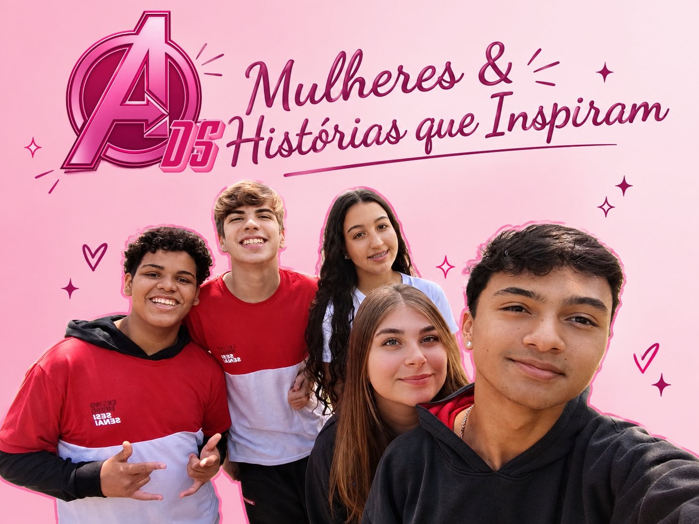
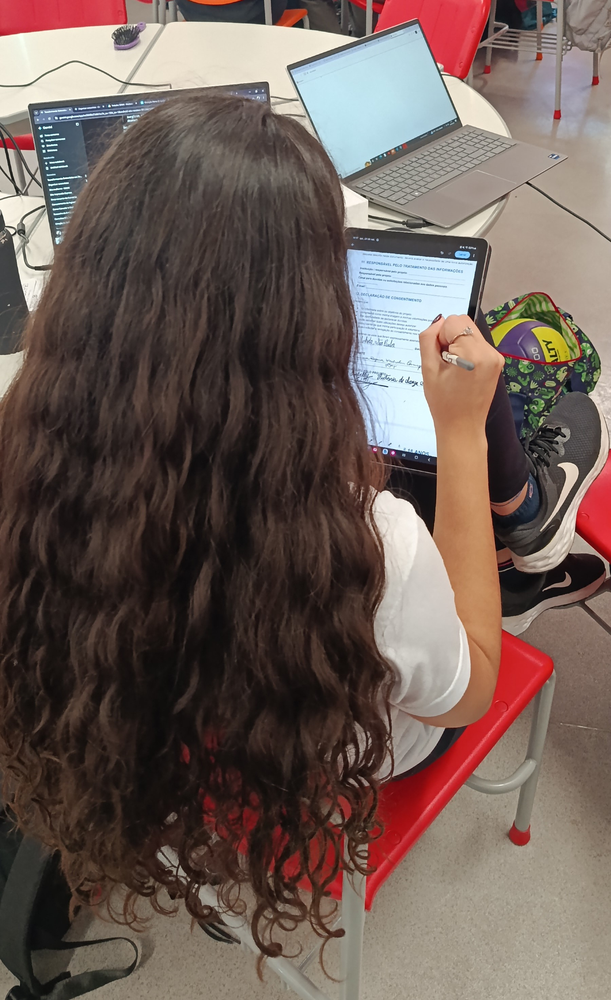
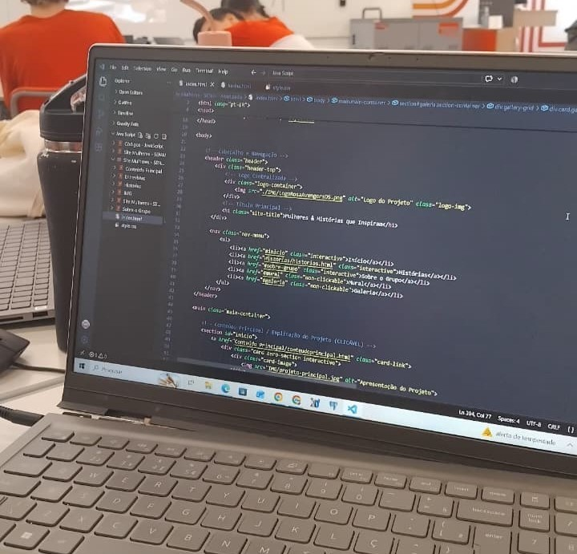
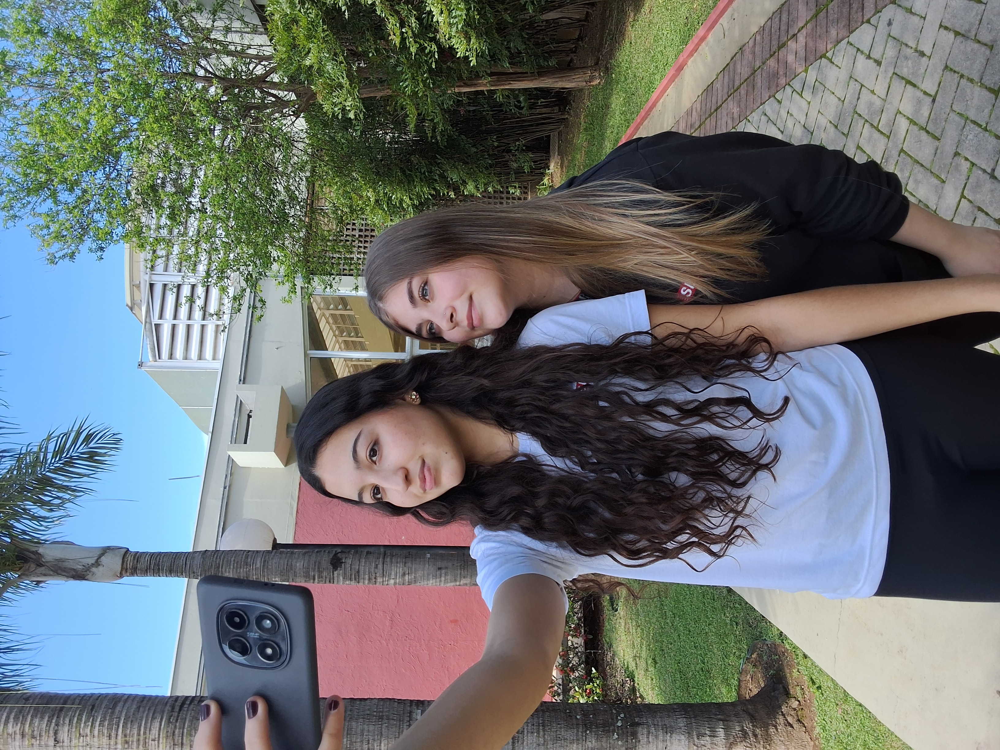
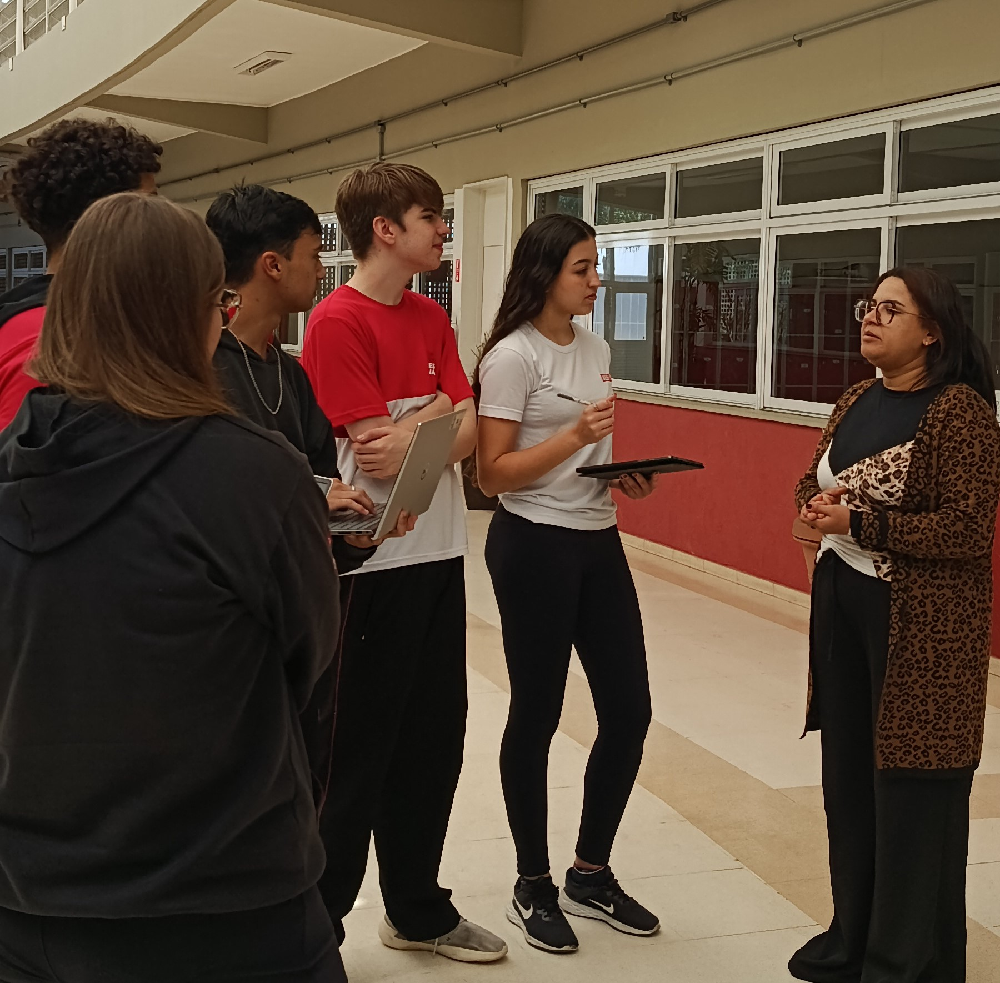
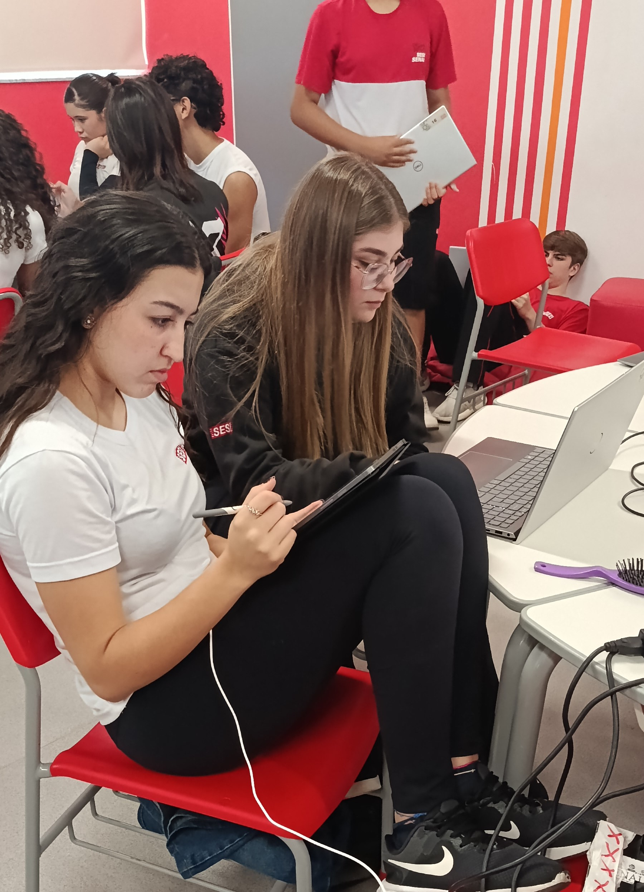

Conteúdo Principal
O Projeto
Vozes, trajetórias e a força das mulheres que transformam nossa comunidade diária.
Clique para saber mais →Histórias de Inspirar
Sobre o Grupo

Mural de Vozes
Bastidores





